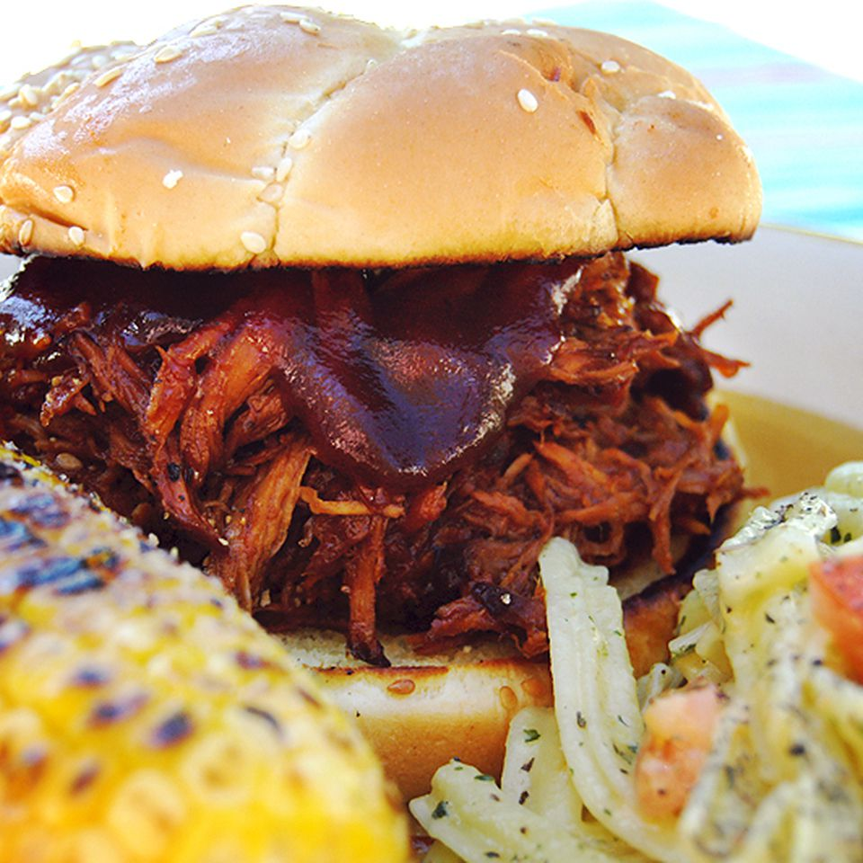

Odin Recipes
Slow Cooker Texas Pulled Pork

This pulled pork recipe is tender,it’s incredibly easy to make in your slow cooker!
- Oil: This pulled pork recipe starts with a teaspoon of vegetable oil at the bottom of your slow cooker.
- Pork: If your pork shoulder roast is larger or smaller than four pounds, you’ll need to adjust the ingredient rations and cook time.
- Sauces: You’ll need bottled barbecue sauce, yellow mustard, and Worcestershire sauce.
- Apple cider vinegar: Apple cider vinegar adds brightness and cuts through the other rich flavors.
- Broth: Use store-bought or homemade chicken broth.
- Brown sugar: Light brown sugar lends warmth and sweetness.
- Seasonings: This flavorful pork is seasoned with chili powder, garlic, and dried thyme.
- Onion: A chopped onion gives the pork tons of flavor.
- Buns and butter: You’ll need buttered hamburger buns if you plan to make pulled pork sandwiches.
- Pour oil into the slow cooker, then place the roast on top of the oi
- Add the remaining ingredients to the Crock-Pot.
- Cover and cook until the pork shreds easily.
- Shred the pork and return it to the slow cooker to combine it with the juices.
- f you’re making sandwiches, serve the pulled pork on buttered buns.
Similar Recipes
- This Recipe
- This Other Recipe
- This Another Recipe